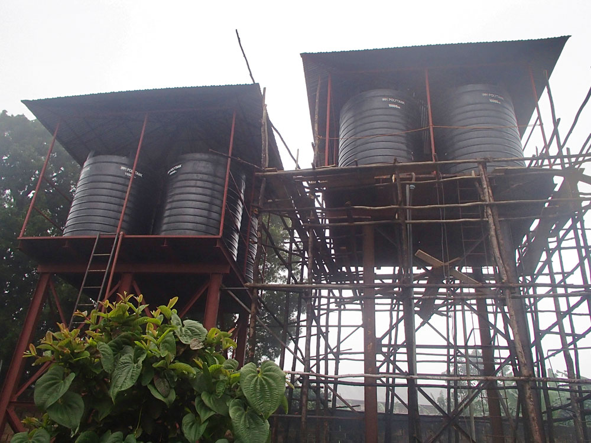
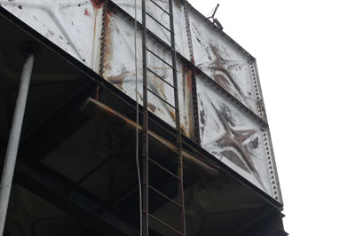
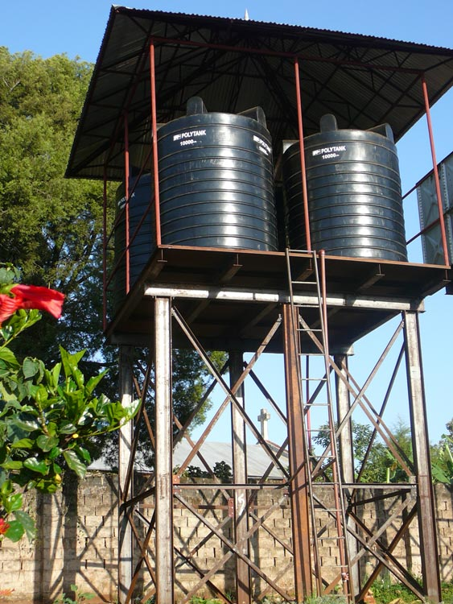

Een ziekenhuis zonder drinkwater is ondenkbaar.
In 2013 kwam het alarmerende bericht dat de watertank lekte en de druk wegviel. Wat volgde was een project van meer dan tien jaar.
Water, de basis van elk ziekenhuis
De installatie dateert uit 1977, toen via een 100 meter diep boorgat een nieuwe waterader werd aangeboord. Daaruit wordt nog altijd voldoende water gepompt, maar de stalen watertank lekte zo ernstig dat de watertoren te weinig druk opbouwde.
Het plan: een extra watertoren in dezelfde staalconstructie, met daarop vier plastic tanks van elk 10.000 liter, en een tweede boorgat met een pomp op zonne-energie. Zo is het ziekenhuis niet meer afhankelijk van een stroomnet dat nogal eens uitvalt.
Schuif en zie het verschil.
Links de lekkende tank uit 1977, rechts de nieuwe toren met kunststof tanks.
Sleep de balk, of gebruik de pijltjestoetsen.


Nieuw · 2015Lekkage · 1977Hoe het is gegaan
Het eerste boorgat
Een waterader wordt aangeboord via een 100 meter diep boorgat.
Alarmerend bericht
De stalen tank lekt ernstig. Zonder druk geen water op de afdelingen.
De nieuwe watertoren
Een extra toren met vier plastic tanks van 10.000 liter wordt gebouwd.
Rotary en Zonta slaan de handen ineen
Rotaryclub Oldebroek/Elburg en Zontaclub Zwolle starten een back-up voor de oude pomp. Wilde Ganzen voegt er 50% aan toe.
Locatieonderzoek
Een survey bepaalt waar het tweede borehole moet komen. De oude pomp werkt nog altijd.
Een nieuw borehole en zonnepanelen
Een elektrische pomp en zonnepanelen worden geplaatst. Op 31 oktober volgt de feestelijke opening.
Foto's uit Rubya
Schoon water is de eerste medicijn
Dit project is dankzij veel mensen afgerond. Er zijn nog meer plekken waar uw gift het verschil maakt.
NL66ABNA0624513211t.n.v. Stichting Vrienden van Rubya · BIC ABNANL2A